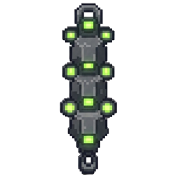
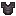
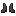

САНДЕВИСТАН
Военный киберимплант хребта.
Пять секунд ускорения. Цветной след.
Нагрузка, которая не уходит сама.

Вечный забег
Экран нейро-кэша: субъект бежит вечно — разгон, цветной шлейф послесвечений, откат и новая вариация трассы. Правила те же, что в стендах ниже.
Замедление времени
Натурный стенд: сбрасывай на субъекта что угодно и жми V. Мир в зоне ±20 блоков замирает с сохранением скорости и фитиля, а владелец второго импланта продолжает двигаться.
Нагрузка и препарат
Живая модель на главной симуляции: держи V, пока нагрузка ползёт к сотне. Выше — неотменимая критическая фаза. Препарат варится ниже и ставит снижение в очередь.
Три флакона в стойке дают три дозы за один ингредиент.
При эффективности 95% следующая доза ставит в очередь снижение на 47,5 пункта. Пока работает ускорение, начинать инъекцию нельзя.
Активация во время уже начатого укола
Ускорение сокращает использование предмета до одного тика, но проверка в конце инъекции не применяет препарат во время ускорения. Доза всё равно расходуется.
Проклятия и снятие импланта
При обычном получении добавляются Проклятие несъёмности и Проклятие утраты. Проверка выполняется в тике предмета, если на нём ещё нет Несъёмности. В критическом финале имплант удаляется.
Скорость ударов и восстановление цели
Ускорение сбрасывает кадры неуязвимости и анимацию боли цели. Собственный откат оружия при этом не удаляется. Стенд использует безоружный удар без брони и зачарований манекена.
Ритуал установки
Стих из достижения «Иммуносупрессант» — единственная инструкция к импланту. Хореография вольная, механика честная: кат-сцена 100 тиков, имплант на 99-м, затем проклятия.



…
Паспорт импланта
Техническая плашка из архива ZitraksMode — то, что подписывает субъект.
SANDEVISTAN
ZITRAKSMODE · MILITARY GRADE · OS v3.0НЕ КРАФТИТСЯ
Достижения
6 родных достижений · 150 XP
Названия и описания ниже — цитаты из исходного мода, включая его грубую лексику. Условия проверяются отдельно и не заменяются текстами подсказок.